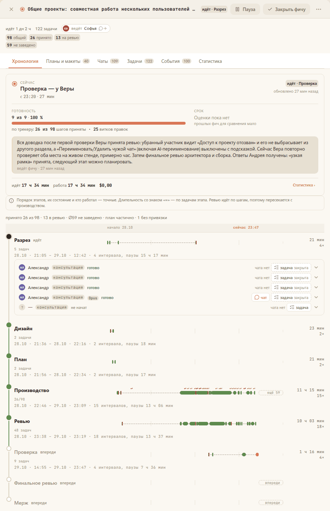
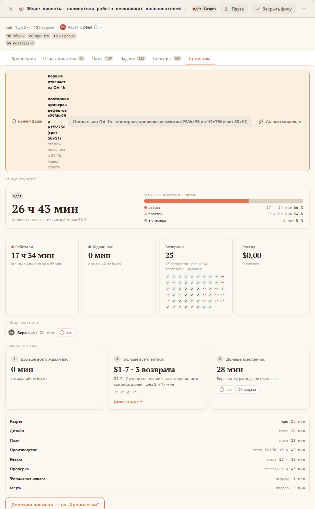
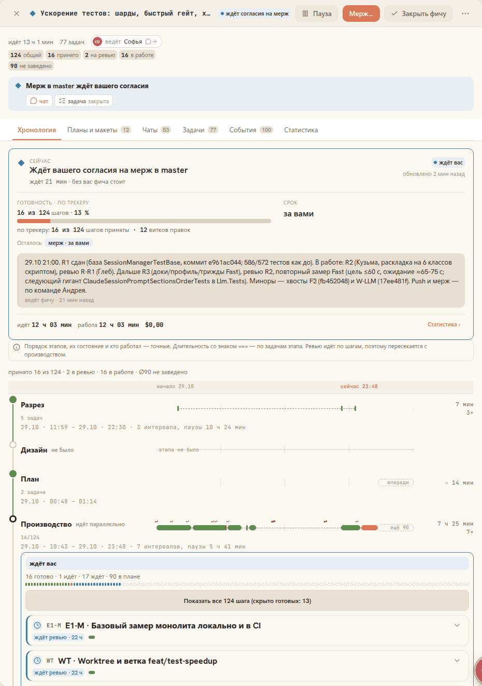
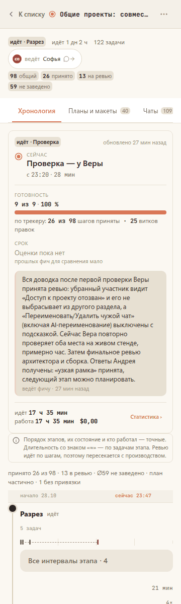

Страница фичи проще · v1
Сценарий
Как сейчас
A · Сводка + вкладки
B · Один экран
C · Лента + карточка
Состояние
идёт
ждёт вас
Тема
светлая
тёмная
Десктоп 1400 × 900 · снимок стенда, остров страницы — сценарий
Мобила 360 × 740

«Общие проекты», вкладка «Хронология» (стенд, 29.10 23:47).
Тег шапки «идёт · Разрез», в сводке «идёт · Проверка».
«Готовность 9 из 9 · 100 %» и тут же «по трекеру 26 из 98».
Счётчики шагов трижды: чипы под шапкой, строка под сводкой, строка над гантом.
«идёт 1 дн 2 ч» в шапке, «идёт 17 ч 34 мин» в сводке.
«Проверка · впереди» на ганте, хотя Вера проверяет сейчас.

Та же фича, «Статистика».
Тревога «Вера молчит» есть только здесь, на «Хронологии» её нет.
Время: 26 ч 43, 17 ч 34, 60 ч 55, 38 ч 01 — четыре базы без подписи, какая где.
Этапы второй раз, и длительности другие: производство 13 ч 45 против 11 ч 15.
«Возвраты 25», в сводке «25 витков правок», в вердиктах returned 15.

«Ускорение тестов», ждёт мержа.
«Ждёт вашего согласия на мерж» — пять раз: тег, баннер, сводка, «Осталось», дорожка.
«Срок · за вами», при этом в ответе оценка ≈ 10 дней.
План «впереди ≈ 14 мин» — у сделанного этапа.
Мерж просят при 90 незаведённых шагах — расхождение трекера не показано.

360 px.
До ганта — полтора экрана: два тега, чипы в две строки, сводка, памятка, счётчики.